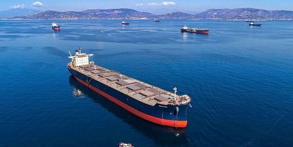

ByEirini Diamantara&Dimitris Roumeliotis
The dry bulk S&P market strengthened during the first half of 2026, supported by healthier freight rates, improved vessel utilisation and rising seaborne commodity demand. Compared to 2025, stronger market fundamentals boosted buyer sentiment and pushed secondhand asset values higher across nearly all dry bulk vessel segments.
The strengthening fundamentals become evident when examining trade flows. During Q1 2026, loaded dry bulk cargoes reached approximately 1.41 billion mt, compared to 1.38 billion mt in Q1 2025, representing a 2.2% increase year-on-year. Notably, this growth was achieved despite a lower number of cargo movements, indicating larger average parcel sizes and more efficient vessel utilisation. The first quarter also highlighted a broadening of demand drivers beyond the traditional iron ore trade. Iron ore volumes increased to approximately 331 million mt, with January shipments outperforming the corresponding month of 2025 by almost 8%, while metallurgical coal volumes remained resilient, supported by a particularly strong February that recorded a 17% year-on-year increase.
Even more encouraging was the performance of several minor bulk commodities. Nickel ore emerged as one of the strongest growth stories, rising by 33% year-on-year to almost 9 million mt during Q1, supported by Indonesia's expanding processing industry and sustained Chinese demand. Bauxite cargoes increased by 12% to more than 71 million mt as Guinea-to-China flows continued their multi-year expansion. Agricultural commodities also contributed positively, with soybean exports benefiting from robust South American harvests, while wheat volumes surged by approximately 20%, reaching nearly 50 million mt during the quarter. Meanwhile, clinker cargoes more than doubled from 5.3 million mt to almost 12 million mt, signalling a meaningful shift in regional construction-related trade patterns.
The momentum continued during April and May, with loaded volumes reaching 1.01 billion mt compared to 975 million mt during the same period of 2025, widening the year-on-year growth rate to 3.7%. Particularly supportive for the mid-size sectors was the continued strength in metallurgical coal, thermal coal, soybeans and nickel ore, all of which generated additional tonne-mile demand across the Panamax, Kamsarmax and Ultramax segments.
This improvement in trade flows is increasingly reflected in secondhand values. Compared to January 2026, asset prices have strengthened across virtually all dry bulk sectors, with the most impressive gains recorded in the larger vessel categories. Ten-year-old Capesize values have increased from USD 50.0 million in January to USD 56.5 million in June, representing a 13% rise within just six months. Five-year-old Capes have climbed from USD 65.0 million to USD 72.0 million, while 15-year-old units have surged by more than 20% to USD 36.5 million. Such appreciation indicates that buyers remain willing to pay increasingly higher prices not only for modern tonnage but also for older vessels capable of capturing improved earnings.
The strength is equally visible in the Panamax and Kamsarmax sectors. Five-year-old Kamsarmax values have risen from USD 34.0 million in January to USD 38.0 million in June, while 15-year-old units have gained more than 20% over the same period. Ultramax and Supramax vessels have followed a similar trajectory, with 10-year-old values increasing by approximately 14%, supported by the expansion in grain, bauxite and nickel ore trades. Even the traditionally more defensive Handysize sector has recorded double-digit gains across most age categories.
A key feature of the current dry bulk market is its increasingly diversified demand base, reducing reliance on Chinese iron ore imports. Growing volumes across multiple commodity trades are supporting vessel employment and tonne-mile demand, helping sustain stronger freight earnings and higher secondhand asset values across all age groups.
Data source:Xclusiv Shipbrokers Inc.